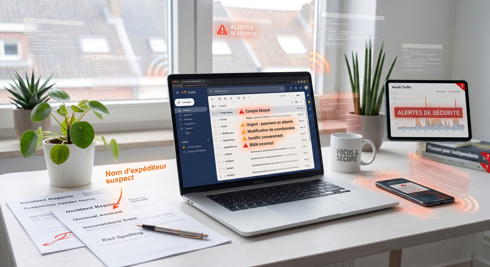
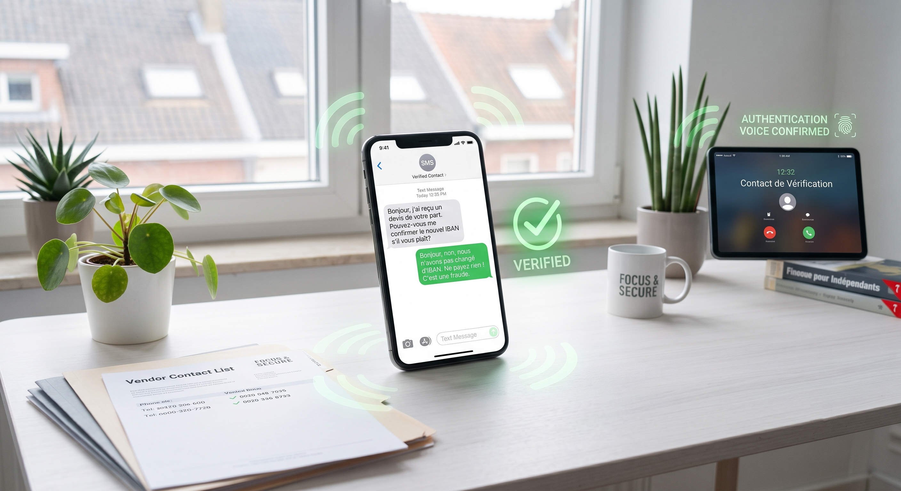

Un email banal, un nom familier, une demande urgente… et l’erreur peut arriver très vite. Ce type de fraude ne repose pas toujours sur la technique, mais souvent sur la confiance et la rapidité.
Vous recevez un devis par email. Le message semble venir d’un client connu. Quelques heures plus tard, une demande de changement de coordonnées bancaires arrive. Au premier regard, tout paraît normal.
Et pourtant, c’est précisément dans ce genre de situation que beaucoup de fraudes fonctionnent. Pas parce qu’elles sont particulièrement sophistiquées, mais parce qu’elles s’appuient sur des habitudes très simples : lire vite, faire confiance au contexte, et agir sans deuxième vérification.
Dans une petite structure, on traite souvent les emails, les devis, les paiements et les validations dans le flux de la journée. On avance vite, parce qu’il faut avancer vite.
Le fraudeur le sait. Il n’a pas besoin de créer un message complexe. Il lui suffit souvent de reprendre un contexte crédible, un nom familier, une signature connue ou une demande qui semble logique.
Plus le message paraît banal, plus il est facile de baisser la garde.
Un seul détail ne signifie pas forcément qu’il y a fraude. En revanche, plusieurs petits signaux doivent pousser à ralentir avant d’agir.
Dans beaucoup de cas, ce n’est pas un gros signal qui trahit la fraude, mais une accumulation de petits détails.

Le réflexe le plus utile est aussi l’un des plus simples : ne jamais valider une demande sensible uniquement sur base d’un email.
Si un client, un fournisseur ou un partenaire demande un changement de coordonnées bancaires, une validation urgente ou une action inhabituelle, prenez quelques secondes pour confirmer autrement.
Un appel téléphonique, un numéro déjà connu, ou un autre canal habituel suffisent souvent à éviter une erreur coûteuse.
Inutile d’avoir un processus compliqué. Dans beaucoup de petites structures, une règle simple suffit déjà à réduire fortement le risque.

Les fraudes les plus efficaces ne sont pas toujours les plus techniques. Elles profitent souvent de la vitesse, de la routine et de la confiance.
Dans une petite structure, un réflexe simple peut déjà faire une grande différence : confirmer toute demande sensible par un autre canal avant d’agir.
Il n’est pas toujours simple de savoir si vos réflexes sont suffisants face à une demande urgente, un changement de compte bancaire ou un email inhabituel. Lors de notre audit flash gratuit, nous faisons un état des lieux rapide de vos pratiques et identifions avec vous les points à renforcer en priorité.
Réserver mon bilan rapide